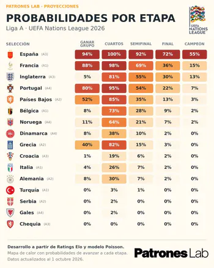
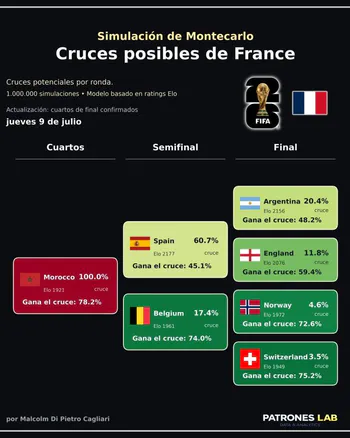
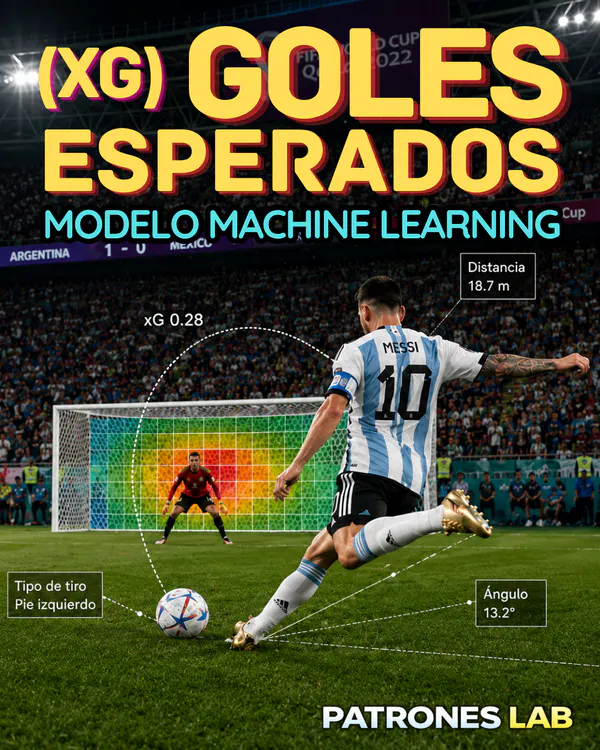

चैंपियंस लीग 2026/27 · अनुमानित अंक
प्वासों और मोंटे कार्लो से लीग चरण के अंत में अंकों का अनुमान, मध्यिका और 25–75 तथा 5–95 प्रतिशतक अंतरालों के साथ।
पोस्ट देखें ↗प्वासों और मोंटे कार्लो से लीग चरण के अंत में अंकों का अनुमान, मध्यिका और 25–75 तथा 5–95 प्रतिशतक अंतरालों के साथ।
पोस्ट देखें ↗
प्वासों और मोंटे कार्लो के 10 लाख सिमुलेशन से तीसरे मैचदिवस तक अनुमानित अंतिम रैंक में बदलाव।
पोस्ट देखें ↗
10 लाख मोंटे कार्लो सिमुलेशन से ला लीगा की टीमों की अनुमानित अंतिम रैंक का हीटमैप।
पोस्ट देखें ↗
चैंपियंस लीग में शीर्ष आठ, प्लेऑफ़ और बाहर होने की संभावनाएँ निकालने के लिए प्वासों और मोंटे कार्लो सिमुलेशन।
पोस्ट देखें ↗
हर टीम की एलो रेटिंग, अनुमानित अंक और सिमुलेशन के नतीजों की सीमा की तुलना।
पोस्ट देखें ↗
सिमुलेटेड अंकों के हिस्टोग्राम से प्रतियोगिता के सबसे आम नतीजों का अध्ययन।
पोस्ट देखें ↗
अंतिम रैंक के प्रतिशतकों की तुलना, जिससे सबसे संभावित नतीजों की सीमा समझी जा सके।
पोस्ट देखें ↗
नतीजों और रैंक का अनुमान लगाने वाले प्वासों मॉडल और मोंटे कार्लो सिमुलेशन का परिचय।
पोस्ट देखें ↗
सिमुलेशन पर LinkedIn पोस्ट। इसकी विशिष्ट सामग्री का सत्यापन अभी बाकी है।
पोस्ट देखें ↗
प्रतियोगिता के हर मैचदिवस पर राष्ट्रीय टीमों की अनुमानित रैंक में बदलाव।
पोस्ट देखें ↗
चैंपियंस लीग के नतीजों का अनुमान लगाने के लिए प्वासों गोल मॉडल और मोंटे कार्लो सिमुलेशन।
विकासाधीन परियोजना देखें ↗
हर राष्ट्रीय टीम की एलो रेटिंग और नेशंस लीग जीतने की अनुमानित संभावना की तुलना।
पोस्ट देखें ↗
ग्रुप चरण से फ़ाइनल तक प्रतियोगिता के अलग-अलग दौर में आगे बढ़ने की संभावनाएँ।
पोस्ट देखें ↗
यूएफ़ा नेशंस लीग की संभावनाओं का विश्लेषण करने वाले सिमुलेशन मॉडल का परिचय।
पोस्ट देखें ↗
AENA के सार्वजनिक डेटा से बलेआरिक द्वीपों की हवाई गतिविधि का विश्लेषण।
पोस्ट देखें ↗
ग्रुप जीतने, नॉकआउट में आगे बढ़ने और ख़िताब हासिल करने की संभावनाओं का सिमुलेशन।
प्रोजेक्ट देखें ↗
नए नतीजों और एलो रेटिंग से अंतिम रैंक की संभावनाएँ अपडेट की गई हैं।
पोस्ट देखें ↗
ला लीगा 2026/27 के सिमुलेशन पर पोस्ट। विवरण का सत्यापन अभी बाकी है।
पोस्ट देखें ↗
ला लीगा की अंतिम रैंक और नतीजों की संभावनाएँ आँकने के लिए विभिन्न परिदृश्यों का सिमुलेशन।
विकासाधीन परियोजना देखें ↗
ला लीगा 2026/27 के परिदृश्यों पर पोस्ट। विवरण का सत्यापन अभी बाकी है।
पोस्ट देखें ↗
लेनदेन के डेटा में समूह और असामान्य गतिविधियाँ पहचानने के लिए DBSCAN का उपयोग।
पोस्ट देखें ↗
शिकागो की टैक्सी यात्राओं में समय, स्थान और खर्च से जुड़े पैटर्न की पड़ताल।
पोस्ट देखें ↗
लेनदेन और धोखाधड़ी से जुड़े संकेतों के विश्लेषण का वर्गीकरण मॉडल।
पोस्ट देखें ↗
Patrones Lab और उसकी डेटा विश्लेषण, मॉडलिंग और दृश्य प्रस्तुति की परियोजनाओं का परिचय।
पोस्ट देखें ↗
मौसमी घटनाओं से आर्थिक नुकसान के अध्ययन के लिए वर्गीकरण तकनीकों की तुलना करने वाला मॉडल।
विकासाधीन परियोजना देखें ↗
आपूर्तिकर्ताओं पर खर्च, समय के साथ उसके बदलाव, श्रेणियाँ और भौगोलिक वितरण देखने का डैशबोर्ड।
प्रोजेक्ट देखें ↗
Spotify रैंकिंग का डैशबोर्ड, जिसमें स्ट्रीम, समय के साथ बदलाव और देशों के अनुसार वितरण देख सकते हैं।
विकासाधीन परियोजना देखें ↗
विश्व कप जीतने और फ़ाइनल में संभावित मुकाबलों के नए अनुमान।
पोस्ट देखें ↗
विश्व कप के क्वार्टर फ़ाइनल मुकाबलों और नॉकआउट में आगे बढ़ने की संभावनाओं का सिमुलेशन।
पोस्ट देखें ↗
विश्व कप के सेमीफ़ाइनल और फ़ाइनल में पहुँचने और ख़िताब जीतने की संभावनाओं का अनुमान।
पोस्ट देखें ↗
अंतिम 32 के दौर के बाद आगे बढ़ने और ख़िताब जीतने की अद्यतन संभावनाएँ।
पोस्ट देखें ↗
उस समय उपलब्ध नतीजों से हर दौर में आगे बढ़ने की संभावना का अनुमान।
पोस्ट देखें ↗
हर राष्ट्रीय टीम के आगे बढ़ने और चैंपियन बनने की संभावना आँकने वाला सिमुलेशन मॉडल।
प्रोजेक्ट देखें ↗
पोज़िशन के अनुसार निकाले गए प्रतिशतकों और प्रति 90 मिनट के आँकड़ों से अर्जेंटीना के खिलाड़ियों की तुलना।
पोस्ट देखें ↗
प्रतिशतक रडार चार्ट से क़तर विश्व कप में खिलाड़ियों के व्यक्तिगत प्रदर्शन की दृश्य तुलना।
प्रोजेक्ट देखें ↗
अर्जेंटीना–फ़्रांस फ़ाइनल में गेंद के साथ की गई कार्रवाइयों से गोल का खतरा कैसे बदला।
पोस्ट देखें ↗क़तर 2022 के अर्जेंटीना–फ़्रांस मैच में फ़ुटबॉल और संभावनाओं पर लेख।
लेख पढ़ें ↗
क़तर विश्व कप में हर शॉट पर गोल की संभावना का अनुमान लगाने वाला प्रायिकता मॉडल।
प्रोजेक्ट देखें ↗क़तर विश्व कप 2022 में गेंद के साथ की गई कार्रवाइयों से बने खतरे का विश्लेषण।
प्रोजेक्ट देखें ↗
शिकागो में दर्ज टैक्सी यात्राओं की माँग और मार्ग देखने का इंटरैक्टिव डैशबोर्ड।
पोस्ट देखें ↗
खुले डेटा से बना नक्शा, जिसमें शिकागो के विभिन्न इलाकों में यात्राओं की सघनता दिखाई गई है।
पोस्ट देखें ↗
शिकागो में टैक्सी यात्राओं के शुरुआती और अंतिम इलाकों, मार्गों और भौगोलिक सघनता का विश्लेषण।
पोस्ट देखें ↗सबसे व्यस्त इलाकों और दर्ज यात्राओं के शुरुआती व अंतिम स्थानों के बीच आवाजाही का नक्शा।
प्रोजेक्ट देखें ↗शिकागो में टैक्सियों की गतिविधि, किराया और मार्ग देखने का इंटरैक्टिव डैशबोर्ड।
प्रोजेक्ट देखें ↗दर्ज यात्राओं में दिन, समय, दूरी और किराये के अनुसार अंतर का विश्लेषण।
पोस्ट देखें ↗खुले डेटा के आधार पर शिकागो के शहरी टैक्सी नेटवर्क पर लेख।
लेख पढ़ें ↗शिकागो में दर्ज टैक्सी यात्राओं की माँग, मार्ग और किराये का विश्लेषण।
प्रोजेक्ट देखें ↗
स्थान, शहर के केंद्र से दूरी और मोहल्लों की विशेषताओं के अनुसार कीमतों का विश्लेषण।
प्रोजेक्ट देखें ↗
हर प्रकार के कमरे में अपेक्षाकृत महँगे या सस्ते आवास को पहचानने वाला मॉडल।
प्रोजेक्ट देखें ↗
लंदन में Airbnb आवासों की कीमतों और भौगोलिक वितरण की तुलना।
पोस्ट देखें ↗लंदन में Airbnb आवासों के किराये और उसके भौगोलिक वितरण पर लेख।
लेख पढ़ें ↗लंदन के मोहल्लों में किराया, आवास के प्रकार, उपलब्धता और आपसी अंतर की पड़ताल।
प्रोजेक्ट देखें ↗बलेआरिक द्वीपों के हवाई अड्डों पर यात्रियों, हवाई संपर्क और मौसमी उतार-चढ़ाव का विश्लेषण।
पोस्ट देखें ↗AENA के खुले डेटा पर आधारित बलेआरिक द्वीपों के पर्यटन पर लेख।
लेख पढ़ें ↗AENA के सार्वजनिक डेटा से मायोर्का, इबीसा और मेनोर्का के हवाई यातायात का विश्लेषण।
प्रोजेक्ट देखें ↗असामान्य लेनदेन और धोखाधड़ी के संभावित पैटर्न पहचानने के लिए घनत्व के आधार पर क्लस्टरिंग।
प्रोजेक्ट देखें ↗धोखाधड़ी का जोखिम आँकने और संबंधित संकेत समझने के लिए लेनदेन का पर्यवेक्षित वर्गीकरण।
प्रोजेक्ट देखें ↗
धोखाधड़ी से जुड़े असामान्य व्यवहार की पड़ताल के लिए K-means से लेनदेन का समूह विभाजन।
प्रोजेक्ट देखें ↗